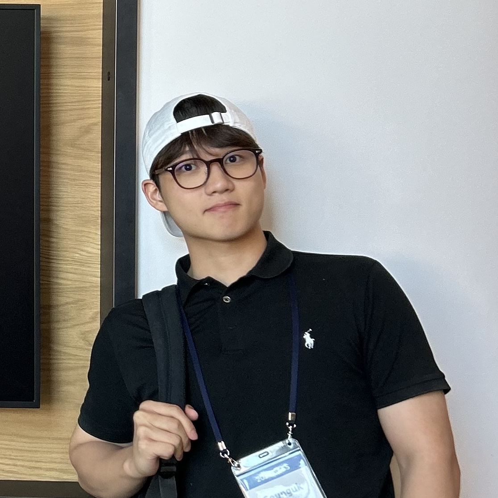

Korea Advanced Institute of Science and Technology (KAIST)
Bachelor of Science - Chemistry

Researcher · AI & Computational Chemistry
Hi! I’m an undergraduate student in chemistry at KAIST, currently conducting research in Prof. Woo Youn Kim’s group website.
Previously, I worked in Prof. Mu-Hyun Baik’s group website on computational studies of organometallic catalysts and photochemical systems, using DFT calculations, QM/MM, and molecular dynamics.
Currently, I’m developing neural free energy estimation methods for molecular ensembles by combining molecular generative modeling with nonequilibrium work relations, including Jarzynski equality based sampling.
In the long term, I hope to study biological challenges from a mechanistic, physics-grounded perspective. I’m especially interested in the molecular mechanisms underlying Alzheimer’s disease, including the dynamics of intrinsically disordered proteins.
Bachelor of Science - Chemistry
High School Diploma - Chemistry
Student Researcher
Advisor: Prof. Eun Young Choi
Singapore International Collaborative Research Program
Chiral Indenyl Rh-Catalyzed Enantioselective Olefin 1,2-Arylamination
Chiral Indenyl Rh-Catalyzed Enantioselective Olefin 1,2-Arylamination
Biocompatible MOFs Developed by Facile Ultra-Fast Room Temperature Synthesis
Improvement of Gas Adsorption Efficiency of Fragile Porphyrin-based MOFs
Improvement of Gas Adsorption Efficiency of Fragile Porphyrin-based MOFs
Optimizing Synthesis Conditions of PPF-4: Effect of Acid Addition on Crystal Growth
Global Entrepreneurship Summer School.
IR Pitching Contest, Global Entrepreneurship Summer School.
Ministry of Education, Republic of Korea.
Awarded by the Deputy Prime Minister and Minister of Education to 100 individuals nationwide who exemplify future leadership.
Graduation of Korea Science Academy.
Chemistry Department, Korea Science Academy. 1st and 2nd semesters.
World Invention Creativity Olympic (WICO), International Competition.
Korean Youth Invention Idea Contest, Ministry of Science and ICT, Republic of Korea.
Youth Science Debate Competition, National Competition.
Mock start-up, KAIST ENablers.
KAIST undergraduate band, CarpeDiem.
Singapore International Cooperative Research Team.
Korea Science Academy band, Loony.